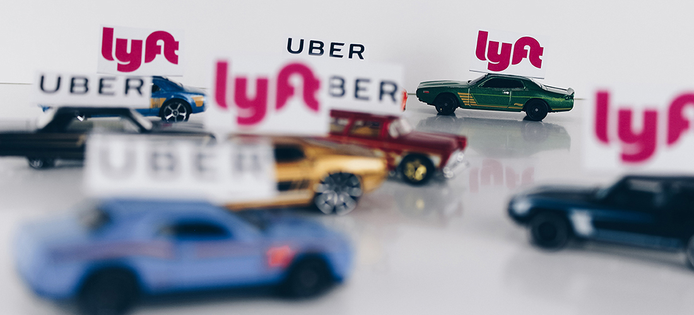

Ride Shares bring Rise to Congested Streets
Gabe Alejos May 1st, 2019

We’ve all been out on the weekend and had one too many drinks. In the past people in these situations have need to rely on a
designated driver, walking home, or trying to hail a cab. What if the cab came straight to where you were standing, offered bottles of water,
and a charger for every phone known to man? That’s where mobile apps like Uber and Lyft come in. Whether it’s someone in a late night weekend
scenario, trying to the get to the airport, or just trying to get a quick ride, these services have been providing convenient public transportation
since 2009 when Uber went live in San Francisco with Lyft following not long after in the same location in 2012. All you need to hail one of these
convenient chariots is to have of the respective apps downloaded on a smart device of your choice, choose a destination, get in and go.
With the ease and convenience of these apps come side effects for some of the oldest forms of public transportation. One study by a team from the University
of Kentucky found the introduction of ride-hailing services like Uber and Lyft have had a drastic impact on cities across the United States.
"Our research finds that standard factors, such changes in service levels, gas price and auto 11 ownership, while important, are insufficient to explain the
recent ridership declines," the trio of engineers writes in the paper, presented last week at the Transportation Research Board's annual meeting. "Our results
also suggest that for each year after Transportation Network Companies (TNCs) enter a market, heavy rail ridership can be expected to decrease by 1.3% and bus
ridership can be expected to decrease by 1.7%." Ride-hailing effects are so substantial that if the current trend continues, bus service in cities studied could be
hit nearly 13% over the 8 years.
According to their website, Lyft claims they are, “Moving cities forward by creating new solutions to old transportation problems.” They also state that,
“Working with policymakers at every level of government and local, community partners, we use research and data to shed light on our most challenging transportation issues.”
While Lyft is making moves in the right direction, it will take time to find the right solution to the ever denser population on the road. These services have added a convenience
that many will not be willing to give up. Some compromise must be made between major cities and the companies that provide these services.